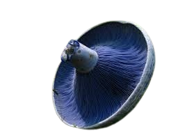
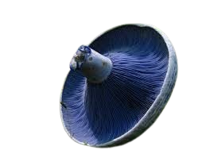

Descripción Morfológica
Lactarius indigo, conocido como "láctario índigo" o "hongo azul lechoso", es una especie micorrízica de la familia Russulaceae. Su característica más notable es su intenso color azul índigo en todas sus partes: sombrero (5-15 cm de diámetro), láminas y pie. Al corte, exuda un látex del mismo color que gradualmente se vuelve verde esmeralda al oxidarse. El sombrero es convexo en ejemplares jóvenes, volviéndose infundibuliforme (en forma de embudo) con la edad, con superficie viscosa en condiciones húmedas.
Características Distintivas
- Látex: Fluido azul que fluye abundantemente al cortar las láminas (contiene pigmentos sesquiterpénicos).
- Coloración: Varía de azul cobalto en ejemplares jóvenes a azul-grisáceo en adultos, con zonas concéntricas más pálidas.
- Esporas: Amiloides, elipsoidales, de 7-9 × 5.5-7 µm, con ornamentación reticulada.
- Olor y sabor: Suave, ligeramente picante en láminas, sin aroma distintivo.
Distribución y Hábitat
Distribuido en bosques templados y subtropicales de América del Norte, Centroamérica, Asia Oriental y recientemente documentado en Colombia. Forma micorrizas principalmente con pinos (Pinus spp.) y robles (Quercus spp.). Fructifica de julio a octubre en suelos ácidos (pH 4.5-5.5), frecuentemente en grupos bajo musgos del género Sphagnum.
Condiciones Ecológicas
- Altitud: 500-3000 msnm, dependiendo de la latitud.
- Humedad: Requiere precipitaciones estivales de al menos 600 mm anuales.
- Asociaciones: Suele aparecer junto a Russula brevipes y Lactarius deliciosus.
Ciclo Biológico y Bioquímica
El micelio establece relaciones simbióticas complejas con las raíces de árboles hospederos, intercambiando nutrientes minerales por carbohidratos. Los pigmentos azules (derivados del guaiazuleno) actúan como protectores contra la radiación UV y posiblemente como inhibidores bacterianos. La producción de látex sirve como defensa mecánica y química contra insectos fitófagos.
Etapas de Desarrollo
- Formación de primordios: 5-7 días tras lluvias intensas.
- Expansión del sombrero: Alcanza tamaño máximo en 48-72 horas.
- Liberación de esporas: 4-5 días tras la emergencia, con máxima producción al amanecer.
Importancia Etnomicológica
- üçΩÔ∏è Comestibilidad: Considerado comestible de calidad media, requiere cocci√≥n (consumido tradicionalmente en M√©xico y Guatemala).
- üé® Usos tint√≥reos: Los pigmentos se han empleado para te√±ir textiles de lana (Mazatecos de Oaxaca).
- üî¨ Investigaci√≥n: Estudios actuales sobre sus metabolitos secundarios con potencial farmacol√≥gico.
- üì∏ Valor est√©tico: Icono de la fotograf√≠a micol√≥gica por su color único.
Datos Fascinantes
- Historia taxonómica: Primeramente descrito en 1822 por Lewis David de Schweinitz en Carolina del Norte.
- Variabilidad cromática: Ejemplares de zonas sombreadas pueden presentar tonos verde-azulados.
- Reacciones químicas: El látex vira a púrpura con KOH (hidróxido de potasio).
- Folclore: Los hongos azules eran considerados sagrados por los Cherokee como "hijos del cielo".
Conservación y Recolección
Especie relativamente común pero con poblaciones sensibles a:
- Deforestación: Depende estrictamente de bosques maduros.
- Cambio climático: Alteración de los regímenes de lluvia estival.
- Sobrerecolección: Presión en áreas cercanas a centros urbanos.
Buenas Prácticas
- Recolectar solo ejemplares maduros (dejar 1/3 de los cuerpos fructíferos).
- Usar cestas de mimbre para permitir dispersión de esporas durante el transporte.
- Documentar localizaciones en apps como iNaturalist para estudios de distribución.
Técnicas de Fotografía
- Iluminación: Luz difusa para captar los matices azules (evitar flash directo).
- Angulos: Primer plano de láminas para mostrar el látex característico.
- Fondo: Contrastar con hojarasca marrón o musgos verdes.